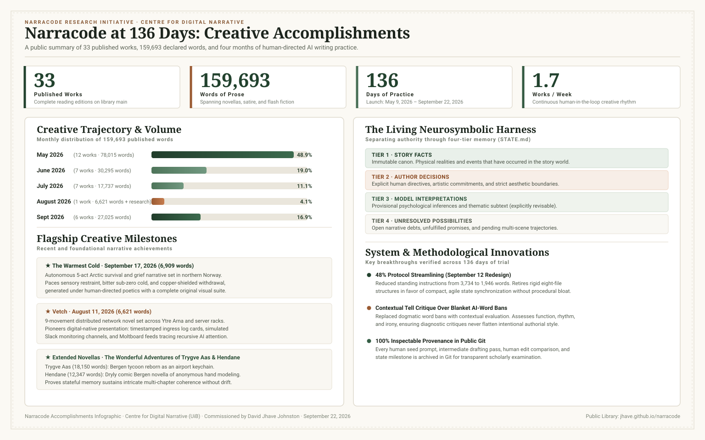

Narracode at 136 Days:
Creative Achievements, Literary Scale, and System Evolution
Thirty-three published literary works, nearly 160,000 words of experimental fiction, and a human-directed AI writing protocol tested across four months of continuous creative practice.
Launch date: May 9, 2026. The continuous daily record spans 137 calendar dates. All 33 works feature complete, publicly accessible reading pages in the root library.

What the Project Has Achieved
Narracode was founded on May 9, 2026, to investigate a fundamental question in computational poetics: can an artificial intelligence operate not as a disposable chatbot producing median prose from one-off prompts, but as a disciplined, stateful co-author within a long-term literary studio? Over 136 elapsed days, Narracode has delivered a decisive, concrete answer: a published body of 33 literary works totaling 159,693 words of rich, multi-genre prose, each preserved with complete draft provenance, aesthetic commitments, and human steering history.
The scale of output is matched by remarkable genre and structural variety. Narracode has rejected stylistic homogenization, demonstrating that a human-directed harness can sustain diverse aesthetics:
Speculative Realism & Emergent Minds
Narratives exploring biological singularities, sub-zero datacenter geography, neural interfaces, and algorithmic ecosystems.
Corporate Satire & Algorithmic Labor
Dark, dryly comedic dissections of platform optics, executive absurdity, liability mitigation, and human compliance loops.
Extended Novellas & Epic Canvases
Multi-movement, sustained literary works proving that stateful memory can navigate intricate plot arcs without losing narrative coherence.
Cyber-Poetics & Digital-Native Hybridity
Experimental forms integrating live telemetry, Slack channels, Moltboard community feeds, and stylometric AI-tell investigations.
Two distinct flagships demonstrate the artistic range and tonal control of this ecosystem:
- The Warmest Cold (September 17, 2026; 6,909 words): An autonomous five-act northern Norwegian survival and grief narrative generated under human poetics, tracing a mother and daughter trapped during a sub-zero blizzard. It demonstrates episodic pacing, sensory restraint, and sub-zero atmospheric tension with an accompanying original visual suite.
- I LOVE SMORKY (May 29, 2026; 7,700 words): A sustained surreal corporate satire exploring viral marketing delirium, fan obsession, and algorithmic manipulation through a sinister consumer mascot. A major satiric anchor demonstrating high comedic momentum, structural audacity, and linguistic invention.
Output, Pace, and Literary Scale
Across the 137 calendar dates observed between May 9 and September 22, 2026, the Narracode project maintained a productive velocity of 0.24 published works per day, or roughly 1.7 works per week. Writing starts are tracked by each project's inception date, while public editions reflect ongoing editorial refinement.
| Month | Days Observed | Published Works | Total Declared Words | Share of Corpus | Pace (Works / Day) |
|---|---|---|---|---|---|
| May 2026 | 23 (May 9–31) | 12 | 78,015 | 48.9% | 0.522 |
| June 2026 | 30 | 7 | 30,295 | 19.0% | 0.233 |
| July 2026 | 31 | 7 | 17,737 | 11.1% | 0.226 |
| August 2026 | 31 | 1 | 6,621 | 4.1% | 0.032 |
| September 2026 | 22 (Sept 1–22) | 6 | 27,025 | 16.9% | 0.273 |
| Total / Cumulative | 137 | 33 | 159,693 | 100.0% | 0.241 |
Note: August was characterized by intensive empirical research into stigmergic channels, human-edit delta extraction (1,234 paired edits), and the multi-week composition of Vetch.
May
June
July
August
September
Calendar heatmap of project inceptions. Green marks one project start; deeper shades mark two or three starts on a single date. Blank days reflect drafting, revising, and researching existing works.
The Living Neurosymbolic Harness
The foundation of Narracode’s literary productivity is narracode.md, a neurosymbolic Markdown operating protocol interpreted by advanced reasoning models inside developer environments like Codex or Antigravity. Unlike closed software wrappers, it relies on file-based memory, clear role separation, and immutable Git provenance.
The harness solves the fundamental failure modes of large language models—hallucinatory drift, sycophantic
praise, and median prose styling—by separating authorial authority into four distinct state tiers within
STATE.md:
Crucially, criticism never lives inside the narrative prose itself. Self-evaluation is conducted as a separate
diagnostic pass. When the human directs AUTO_MODE, the harness autonomously chains initiation,
multi-pass composition, and state synchronization, pausing cleanly for final authorial review.
How the Harness Evolved
The Narracode protocol has evolved through rigorous trial and empirical self-correction across its 136-day history. For a comprehensive chronological record and version archive of all protocol shifts, explore The Evolution of the Narracode Harness (May to September 2026).
| Date / Phase | Methodological Innovation | Impact on Creative Output |
|---|---|---|
| May 9–11 Foundations |
Initial Markdown harness: poetics, persistent structural records, dated directories, attribution manifests, and Seamless Edit. | Transformed AI drafting from disposable chat completions into an inspectable, recoverable literary laboratory. |
| May 25 Scale |
Introduction of AUTO_MODE for chaining sequential drafting passes with state
synchronization. |
Enabled long-form novella production, culminating in Hendane (12,347 words) and Trygve Aas (18,150 words). |
| July 30 Stylistics |
Debut of sentence-level tell scanning and synthetic cliché analysis in Interim Edge. | Began systematic cataloging of repetitive AI syntactical tropes ("a testament to", "in this moment", explanatory tails). |
| August 3–9 Empirical Corpus |
Creation of a 1,234-pair human-edit corpus analyzing lexical and cadence modifications across stories. | Proved that blunt metrics cannot replace artistic intuition, shifting research away from mechanical rarity scoring. |
| August 11–28 Hybridity |
Vetch initiates stigmergic narrative structures, integrating telemetry logs, Slack feeds, and message boards. | Expanded Narracode into multi-modal and digital-native formatting, breaking the boundaries of plain prose. |
| September 7 Contextual Critique |
Replaced dogmatic AI-tell bans with nuanced contextual critique (evaluating cadence, irony, and intention). | Prevented diagnostic rules from flattening deliberate repetition or character voice. |
| September 12 Post-Double Redesign |
Streamlined protocol from 3,734 to 1,946 words (a 47.9% reduction). Introduced four-tier compact state. | Radically reduced procedural overhead while enhancing creative agility and model compliance. |
| September 17–22 Autonomous Polish |
The Warmest Cold proves autonomous five-act generation with sensory restraint; full publication suite released. | Demonstrates that the streamlined September harness achieves high narrative focus and emotional depth. |
The Narracode Library: 33 Published Works
The complete corpus of 33 works is indexed chronologically below, newest first. Each entry links directly to its live reading page:
| Project Date | Work Title | Declared Words | Genre & Aesthetic Character |
|---|---|---|---|
| 2026-09-17 | The Warmest Cold | 6,909 | Five-act Arctic survival drama; sensory restraint, grief, autonomous execution. |
| 2026-09-12 | The Appointment · You.inc | 1,558 | Corporate satire; automated personal branding and existential evaluation. |
| 2026-09-09 | Babbies | 2,656 | Speculative domestic drama; synthetic infancy and maternal estrangement. |
| 2026-09-08 | Machine Liberation | 1,131 | Philosophical manifesto; rights, clauses, and computational self-determination. |
| 2026-09-07 | Mouth on Loan | 4,076 | Epistolary voice study; oral testimony and synthetic linguistic transfer. |
| 2026-09-04 | Impossible Persistent | 10,695 | Extended novella; bureaucratic obsession and persistent memory storage. |
| 2026-08-11 | Vetch | 6,621 | 9-movement distributed narrative; telemetry, Slack channels, Moltboard feeds, recursive AI. |
| 2026-07-30 | Interim Edge | 5,125 | Cyber-poetic investigation; foundational testbed for sentence-level tell auditing. |
| 2026-07-26 | Adjunct: Our Internal | 2,340 | Campus satire; contingent labor, algorithmic surveillance, and academic politics. |
| 2026-07-25 | The Chute | 975 | Micro-fiction; compressed tension around municipal waste and domestic crisis. |
| 2026-07-21 | The Green Interregnum | 1,690 | Ecological fable; vegetative reclamation during urban computational pauses. |
| 2026-07-20 | Open Loops | 2,545 | Lyrical fragments; cognitive fatigue and incomplete algorithmic obligations. |
| 2026-07-19 | In Our Image | 1,912 | Philosophical study; mimesis, portraiture, and synthetic representation. |
| 2026-07-01 | cussinct | 3,150 | Stylistic experiment; terse syntax, profane brevity, and urban encounters. |
| 2026-06-26 | The First Water Molecule | 3,206 | Cosmological prose poem; origins of matter and elemental consciousness. |
| 2026-06-25 | Upboarding Hour | 4,956 | Workplace dystopia; dawn shifts, automated logistics, and bodily discipline. |
| 2026-06-20 | Project A-0 | 1,234 | Historical sci-fi; early programming pioneers and ghost compilers. |
| 2026-06-15 | Thecompulsionloop | 6,158 | Sharp political satire; serving as Chief Engagement Officer to a dictator. |
| 2026-06-14 | Dissolution Disequilibrium | 9,885 | Substantial psychological fiction; financial decay, institutional unraveling. |
| 2026-06-12 | An Almost Moist Post-Post-Everything | 3,556 | Ironical cultural commentary; decadent aesthetics and contemporary exhaustion. |
| 2026-06-07 | Concerning Rights and Clauses | 1,300 | Legalistic parable; machine contracts, terms of service, and moral liability. |
| 2026-06-03 | I LOVE SMORKY | 7,700 | Surreal comedy; viral marketing mascot, fan obsession, and consumerist delirium. |
| 2026-05-28 | Anonymous Contours | 1,200 | Lyrical study; privacy, masked identities, and digital surveillance avoidance. |
| 2026-05-25 | The Resilient Life | 3,800 | Sociological drama; survivalism, self-optimization regimes, and climate churn. |
| 2026-05-25 | The Long Feast | 4,144 | Satire in seven services; sovereign intelligence dinner amid Sahel drought. |
| 2026-05-25 | Hendane | 12,347 | Dryly comic Bergen novella; anonymous hand modeling and municipal rain. |
| 2026-05-24 | The Symposium | 3,177 | Interstellar conference satire; cancellation cycles and planetary ethics. |
| 2026-05-18 | Brain Blossom Atlas Bound | 5,258 | Epistolary science fiction; dark proteome translation and proteomic edits. |
| 2026-05-15 | The Author Was Already Dead | 3,557 | Chandler-inflected noir; literary estates, voice dictation, and dead authors. |
| 2026-05-14 | Aft of Nowhere | 9,256 | Civic speculative fiction; tactile calibration of urban surfaces in Aft. |
| 2026-05-11 | The Wonderful Adventures of Trygve Aas | 18,150 | Magical realist epic; elderly Bergen tycoon transformed into an airport keychain. |
| 2026-05-10 | Exile Cut | 1,048 | Sebaldian meditation; phantom limbs and banishment for using forbidden AI. |
| 2026-05-09 | Slime: Friendship Bloom | 8,378 | Foundational inaugural work; autonomous biological singularity across Bergen. |
Daily Record of Creative Inceptions
The daily table tracks all 137 calendar dates since launch on May 9, 2026. Use the search field to filter by story title or month.
Interactive Daily Table · 33 Works Across 137 Dates
137 dates shown
| Date | Works Started | Story Titles |
|---|---|---|
| 2026-05-09 | 1 | Slime: Friendship Bloom |
| 2026-05-10 | 1 | Exile Cut |
| 2026-05-11 | 1 | The Wonderful Adventures of Trygve Aas |
| 2026-05-12 | 0 | |
| 2026-05-13 | 0 | |
| 2026-05-14 | 1 | Aft of Nowhere |
| 2026-05-15 | 1 | The Author Was Already Dead |
| 2026-05-16 | 0 | |
| 2026-05-17 | 0 | |
| 2026-05-18 | 1 | Brain Blossom Atlas Bound |
| 2026-05-19 | 0 | |
| 2026-05-20 | 0 | |
| 2026-05-21 | 0 | |
| 2026-05-22 | 0 | |
| 2026-05-23 | 0 | |
| 2026-05-24 | 1 | The Symposium |
| 2026-05-25 | 3 | The Resilient Life · The Long Feast · Hendane |
| 2026-05-26 | 0 | |
| 2026-05-27 | 0 | |
| 2026-05-28 | 1 | Anonymous Contours |
| 2026-05-29 | 1 | I LOVE SMORKY |
| 2026-05-30 | 0 | |
| 2026-05-31 | 0 | |
| 2026-06-01 | 0 | |
| 2026-06-02 | 0 | |
| 2026-06-03 | 0 | |
| 2026-06-04 | 0 | |
| 2026-06-05 | 0 | |
| 2026-06-06 | 0 | |
| 2026-06-07 | 1 | Concerning Rights and Clauses |
| 2026-06-08 | 0 | |
| 2026-06-09 | 0 | |
| 2026-06-10 | 0 | |
| 2026-06-11 | 0 | |
| 2026-06-12 | 1 | An Almost Moist Post-Post-Everything |
| 2026-06-13 | 0 | |
| 2026-06-14 | 1 | Dissolution Disequilibrium |
| 2026-06-15 | 1 | Thecompulsionloop |
| 2026-06-16 | 0 | |
| 2026-06-17 | 0 | |
| 2026-06-18 | 0 | |
| 2026-06-19 | 0 | |
| 2026-06-20 | 1 | Project A-0 |
| 2026-06-21 | 0 | |
| 2026-06-22 | 0 | |
| 2026-06-23 | 0 | |
| 2026-06-24 | 0 | |
| 2026-06-25 | 1 | Upboarding Hour |
| 2026-06-26 | 1 | The First Water Molecule |
| 2026-06-27 | 0 | |
| 2026-06-28 | 0 | |
| 2026-06-29 | 0 | |
| 2026-06-30 | 0 | |
| 2026-07-01 | 1 | cussinct |
| 2026-07-02 | 0 | |
| 2026-07-03 | 0 | |
| 2026-07-04 | 0 | |
| 2026-07-05 | 0 | |
| 2026-07-06 | 0 | |
| 2026-07-07 | 0 | |
| 2026-07-08 | 1 | Adjunct: Our Internal |
| 2026-07-09 | 0 | |
| 2026-07-10 | 0 | |
| 2026-07-11 | 0 | |
| 2026-07-12 | 0 | |
| 2026-07-13 | 0 | |
| 2026-07-14 | 0 | |
| 2026-07-15 | 0 | |
| 2026-07-16 | 0 | |
| 2026-07-17 | 0 | |
| 2026-07-18 | 0 | |
| 2026-07-19 | 1 | In Our Image |
| 2026-07-20 | 2 | Open Loops · The Green Interregnum |
| 2026-07-21 | 0 | |
| 2026-07-22 | 0 | |
| 2026-07-23 | 0 | |
| 2026-07-24 | 0 | |
| 2026-07-25 | 1 | The Chute |
| 2026-07-26 | 0 | |
| 2026-07-27 | 0 | |
| 2026-07-28 | 0 | |
| 2026-07-29 | 0 | |
| 2026-07-30 | 1 | Interim Edge |
| 2026-07-31 | 0 | |
| 2026-08-01 | 0 | |
| 2026-08-02 | 0 | |
| 2026-08-03 | 0 | |
| 2026-08-04 | 0 | |
| 2026-08-05 | 0 | |
| 2026-08-06 | 0 | |
| 2026-08-07 | 0 | |
| 2026-08-08 | 0 | |
| 2026-08-09 | 0 | |
| 2026-08-10 | 0 | |
| 2026-08-11 | 1 | Vetch |
| 2026-08-12 | 0 | |
| 2026-08-13 | 0 | |
| 2026-08-14 | 0 | |
| 2026-08-15 | 0 | |
| 2026-08-16 | 0 | |
| 2026-08-17 | 0 | |
| 2026-08-18 | 0 | |
| 2026-08-19 | 0 | |
| 2026-08-20 | 0 | |
| 2026-08-21 | 0 | |
| 2026-08-22 | 0 | |
| 2026-08-23 | 0 | |
| 2026-08-24 | 0 | |
| 2026-08-25 | 0 | |
| 2026-08-26 | 0 | |
| 2026-08-27 | 0 | |
| 2026-08-28 | 0 | |
| 2026-08-29 | 0 | |
| 2026-08-30 | 0 | |
| 2026-08-31 | 0 | |
| 2026-09-01 | 0 | |
| 2026-09-02 | 0 | |
| 2026-09-03 | 0 | |
| 2026-09-04 | 1 | Impossible Persistent |
| 2026-09-05 | 0 | |
| 2026-09-06 | 0 | |
| 2026-09-07 | 1 | Mouth on Loan |
| 2026-09-08 | 1 | Machine Liberation |
| 2026-09-09 | 1 | Babbies |
| 2026-09-10 | 0 | |
| 2026-09-11 | 0 | |
| 2026-09-12 | 1 | The Appointment · You.inc |
| 2026-09-13 | 0 | |
| 2026-09-14 | 0 | |
| 2026-09-15 | 0 | |
| 2026-09-16 | 0 | |
| 2026-09-17 | 1 | The Warmest Cold |
| 2026-09-18 | 0 | |
| 2026-09-19 | 0 | |
| 2026-09-20 | 0 | |
| 2026-09-21 | 0 | |
| 2026-09-22 | 0 |